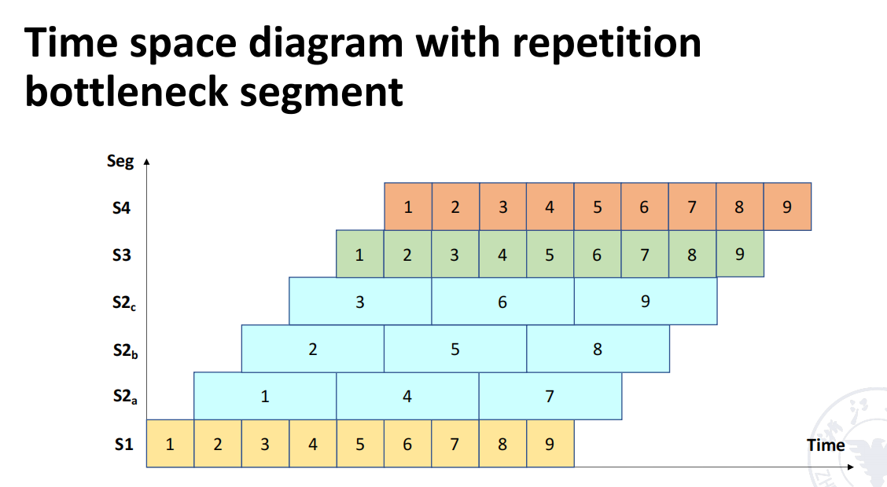
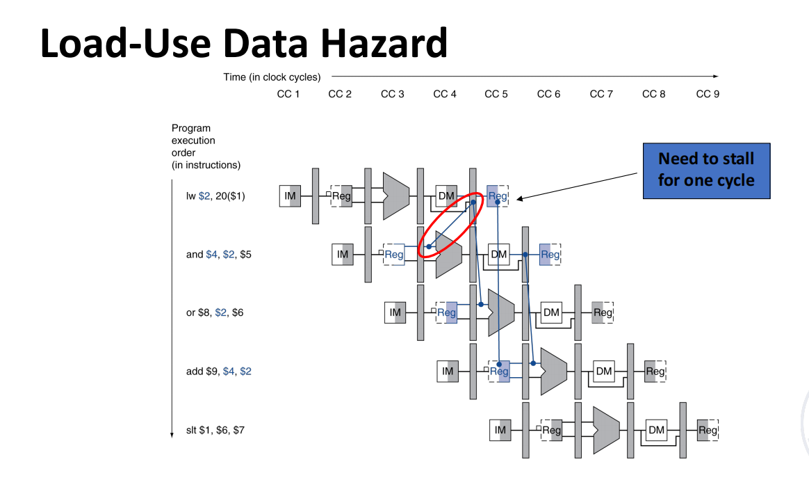

Chapter2
Chapter 2 Pipelining
-
缩短每条指令的执行时间
- 使用更高速的设备
- 改进计算方法
- 提升每个微操作的并行度
- 减少解释过程中的时钟周期数
流水线就是多个阶段的并行。
多重阶段的结合可以显著减少运行时间，但是引入了硬件资源的多余使用。
内存访问冲突
- 指令内存和数据内存：在执行过程中，指令和数据可能需要同时访问内存，可能会发生冲突。
- 指令缓存与数据缓存（同一内存）：哈佛结构。
- 多体交叉结构（同一内存但有局限性）：在使用相同内存的情况下，存在一些访问限制。
- 在内存与指令解码单元之间添加指令缓冲区(instruction buffer)：通过使用指令缓冲区来减少内存访问冲突，提高效率。
取址时间比较短的话，可以与指令解码和为一体，这样实现了解码与执行的并行。双重叠变单重叠惹。
理论上而言，流水线的深度，即区分为的段数越大，效率越高。
-
流水线的特征
- 流水线将一个过程分解为多个子过程，每个子过程由一个专门的功能单元实现。
- 每个阶段的时间应尽量相等，否则流水线将会出现阻塞或中断。最长的阶段将成为流水线的瓶颈，限制整体性能。
- 每个功能单元必须有一个缓冲寄存器（锁存器），这种寄存器称为流水线寄存器。
- 流水线技术适用于大量重复的顺序处理过程。只有当任务不断地输入时，流水线的效率才能得到充分发挥。这意味着流水线的性能取决于任务流的连续性和稳定性。
-
流水线需要通过时间和空闲时间：
- 通过时间 (Pass Time)：指的是第一项任务从开始（进入流水线）到结束所需的时间。
- 空闲时间 (Empty Time)：指的是最后一项任务从进入流水线到得到结果所需的时间。
动态流水线是人能想出来的东西？相当于不同阶段可以用来处理不同任务，这样就可以充分利用硬件资源，提高效率，比如取址不止能给add取址，还能给sub指令译码。
流水线还可以分为不同层次的流水线，具体有以下几种：
-
组件级流水线（Component level pipelining）
- 这是在处理器内部，对算术与逻辑操作组件进行流水线化的技术。具体来说，它通过将算术和逻辑操作部分（如加法器、乘法器、比较器等）划分为多个流水段，从而允许不同类型的操作同时进行流水线处理。（组件指的是各个元件，如加法器，乘法器等等）。
- 优点：通过将算术和逻辑单元划分为多个流水段，可以在执行一个复杂运算时，多个操作单元同时进行工作，提升处理器的效率。
- 举例：比如加法运算可以分成多个子步骤（如部分加法、进位生成等），每个子步骤在流水线中并行处理。
-
处理器级流水线（Processor level pipelining）
- 我们之前学的流水线，对于指令的译码，取址，执行，写回等步骤进行流水线化，从而实现指令的并行执行。
-
处理器间流水线（Inter processor pipelining）
- 处理器间流水线通常指的是将两个或多个处理器串联起来处理同一数据流，每个处理器负责执行整个任务的一部分。每个处理器按顺序处理数据流的不同部分，最终完成整个任务。
- 优点：这种流水线方式可以将计算任务分配给多个处理器并行处理，能够在处理大型数据流时显著提升效率。
- 举例：比如在一个多核处理器系统中，处理器A可能负责数据的预处理，处理器B负责主计算，处理器C负责后处理。每个处理器都在流水线中扮演一个角色，协同完成任务。
流水线根据线性/非线性的区分：
- 线性流水线没有反馈环路，即数据不会在流水线的某个阶段返回并再次进入某个阶段或其他阶段。反馈环路适应于需要迭代或多步骤处理的情况。
-
非线性流水线调度问题（Scheduling Problem of Nonlinear Pipelining）
- 调度问题定义：在非线性流水线中，必须合理安排何时将新任务引入流水线，以避免新任务与已有任务之间发生冲突。任务的引入需要根据流水线当前的状态进行调度，确保任务间的相互依赖不发生冲突。
-
调度目标：
- 避免冲突：确保每个阶段在处理任务时没有资源冲突，特别是在存在反馈环路的非线性流水线中，需要特别注意任务的处理顺序和阶段间的数据流动。
- 提高效率：通过合理的调度来最大化流水线的吞吐量，避免资源空闲或者任务积压的情况。
有序与无序的划分：
- 有序流水线：任务的出流水平顺序与任务的入流水平顺序完全一致。也就是说，每个任务在每个阶段按顺序依次通过流水线，确保任务的处理顺序与任务进入流水线的顺序相同。
- 无序流水线：任务的出流水平顺序与任务的入流水平顺序不一致。也就是说，后进入流水线的任务可能会先完成，从而打破了任务处理的顺序。
标量与向量的划分：
- 标量处理器（Scalar Processor）：不具备向量数据表示和向量指令的处理器。它只能处理标量数据（即单一数据值）并通过流水线技术提高处理效率
- 向量流水线处理器（Vector Pipelining Processor）：支持向量数据表示和向量指令的处理器。它结合了向量数据表示和流水线技术，能够同时处理多个数据元素
2.4 Performance Evaluation of Pipelining
那我们这里就可以定义吞吐量(Throughput)
\(TP = \frac{n}{T_k}\)
首先知道\(TP < TP_max\)
\(n\)与\(m\)分别代表计算几个instruction与流水线区分为几个阶段。
\(TP_{max} = \frac{1}{\triangle t_0}\)
因此链接式有\(TP = \frac{n}{m+n-1}TP_{max}\)。
我们也得出，\(n\)远大于\(m\)时，\(TP\)约等于\(TP_{max}\)
最长的stage是流水线的瓶颈。
\(TP = \frac{n}{\sum_{i=1}^{m}t_i + (n-1)max\{t_1, t_2...t_m\}}\)
\(TP_{max} = \frac{1}{max\{t_1, t_2...t_m\}}\)
解决最长stage瓶颈的方法：
- 细分：将其划分为
n个子段 - 重复
重复的逻辑就是先使用数据分配器分为若干个阶段，处理完再用收集器结合起来。

可以看到相当于1/2/3不是在同一个处理器的，这样就并行了。
对于加速比(speedup)：
\(sp = \frac{T_{old}}{T_{new}}\)，即加速后的时间比去加速前的时间。
在执行的指令足够多即\(n >> m\)时，加速比约为m。
还有一个概念叫做效率(effiency)，相当于用sp再除以阶段数了。
ok接下来有个例子：
以此计算吞吐量、加速比、效率。
首先考虑流水线是怎么处理的:
这样需要15个\(\triangle t\)，我们知道完成全部需要的是7个指令（即4个乘法+3个加法），因此\(TP = \frac{7}{15\triangle t}\)
加速比方面，原先是需要\(4*3+3*4=24\)个\(\triangle t\)，这样一比\(sp = \frac{8}{5} = 1.6\)
效率方面，\(eff = \frac{sp}{m} = \frac{1.6}{5} = 0.32\)，注意这里的m是5，不是3也不是4。
变式：

\(TP = \frac{7}{18\triangle t}\)
\(sp = \frac{4*4+3*4}{18\triangle t} = \frac{28}{18\triangle t}\)
\(eff = \frac{sp}{m}\)，m还是5。
make CPU faster.
各阶段完全平衡的情况下，流水线处理每条指令的时间就是未流水线情况下的时间除以阶段数，即加速比为阶段数。
那为什么不搞个50 stage的流水线？
Too many stages: + Lots of complications + Should take care of possible dependencies among in-flight instructions + Control logic is huge
除了复杂性之外，我们还需要使用锁存器来传递每个阶段的处理结果，锁存器可不是免费的，同时也存在锁存器的延迟。
ok summary:
多功能流水线（multi-functional pipeline）能够同时执行多种功能，但其效率可能受到多个因素的影响。以下是影响多功能流水线效率的几个关键因素：
- 某些段在执行特定功能时，其他功能的段处于空闲状态
- 流水线建立过程中，一些将要使用的段也处于空闲状态
- 当流水线的各个段不相等时，时钟周期由瓶颈段的时间决定
- 当功能切换时，流水线需要清空：flush：孩子们我也干了
- 上一个操作的输出是下一个操作的输入：直接导致了延迟。
- 额外成本：流水线寄存器延迟和时钟偏差
2.5 Hazards of Pipelining
计组其实学过，我们的冒险(hazards)
- 结构冒险(structure hazards): 需要用的硬件结构busy now
- 数据冒险(data hazards): 数据没更新
- 控制冒险(control hazards): 条件跳转等情况，不确定跳不跳
结构冒险
- 需要使用的资源冲突
-
只有一个内存
- load/store
-
紧邻着的话取址需要stall一个周期
- 就有了所谓的流水线气泡
- 因此流水线的数据流需要区分开来的指令/内存
MEM阶段不让继续取址了说是。
解决方案要么就stall，要么就增加硬件资源。
数据冒险
当一条指令需要等待前一条指令完成对数据的访问（例如读取或写入内存或寄存器），才能执行时，就会发生数据冒险。
主要分为以下三类：
-
写后读：读最新的。
text FADD.D F6，F0，F12 FSUB.D F8，F6，F14+ 读后写：text FDIV.D F2，F6，F4 FADD.D F6，F0，F12+ 写后写：text FDIV.D F2，F0，F4 FSUB.D F2，F6，F14
前递(forwarding)
就是数据一产生我们就赶紧拿来用，"Requires extra connections in the datapath"。
那数据也得准备好，然而还是会有没准备好的情况，所以forwarding其实是不能处理所有情况的。
类似这样，我们可以概括为：只能往后传，不能往前传。
其他方面，我们还可以通过改变指令执行顺序尽量避免数据竞争的情况。
2.6 Data Hazards: Forwarding vs. Stalling
一共就只有两种情况会触发forwarding，
Double Data Hazard
显而易见的情况：
add $1,$1,$2
add $1,$1,$3
add $1,$1,$4
我们要进行MEM阶段的前递的修订，即将EX置为更高等级的前递，这样$1能拿到最新的数据。
也就是这个情况：
显然是要下面的那个数据吧，因此只有当EX不前递MEM才前递。
Load-Use Hazard

无法使用前递解决，必须stall一个周期。
How to Stall the Pipeline
怎么stall？我们插入NOP，即00000013
-
强制将 ID/EX 寄存器的控制信号设置为 0
- EX、MEM 和 WB 阶段执行无操作（NOP）
-
防止 PC 和 IF/ID 寄存器的更新
- 使用中的指令重新解码
- 后续指令重新获取
-
1周期的暂停允许 MEM 阶段读取数据
- 数据转发
2.7 Control Hazards
Branch Hazards
等待branch结果确定后再获取下一条指令。
如何不让流水线stall，有以下三种办法：
- predict taken
- predict not taken
- delayed branch
Predict Not Taken
我赌他不跳转，所以直接往下取指令，这样只有在跳转的时候才stall。
Delayed Branch
不管怎么说，都先执行下一条指令，然后判断是否跳转。
看似没有浪费，实际对于branch taken情况而言慢了一个周期。
Data Hazards for Branches
这个需要一个周期的stall。
这个需要两个周期的stall。
2.8 Dynamic Branch Prediction
- 在更深且超标量的流水线中，分支惩罚更加显著
-
使用动态预测
- 使用分支预测缓冲区（也叫分支历史表）
- 通过最近的分支指令地址进行索引
- 存储分支结果（跳转/不跳转）
-
执行分支时：
- 查表，预测相同的结果
- 根据预测的结果开始从顺序地址（fall-through）或目标地址获取指令
- 如果预测错误：刷新流水线并反转预测结果
我们看看BHT，一位的有什么坏处呢？
对于内层的最后一次，之前是跳转，现在要跳回外层了，错了一次，然后再次进入，得继续循环，又错一次。

这是一位的问题。
两位的呢？
2.9 Schedule of Nonlinear pipelining
reservation table：代表执行的一个流程
横轴代表每一拍。
然后我们考虑过几拍引入第二个指令，于是...
后面指令多起来了，也是群魔乱舞，冲突得不成样子。
因此先前可能提到过的流水线调度问题在此引入。
如何解决？
Schedule of Nonlinear pipelining without hazards
initial conflict vector -> conflict vector -> state transition graph -> circular queue -> shortest average interval
- k1: 由于在第1、9用到，所以隔8拍用不行，其余可以
- k2: 在2、3、8用到，所以隔1、5、6拍不行
- k3: -
- k4: 1
- k5: 1
汇合：\(\{1,5,6,8\}\)，变成向量：1011001(1表示冲突，从右往左)
这是最初始的，但是只是一个，接下来也有可能有很多个向量，我们需要取并集。
隔两拍进下一条指令，左侧箭头表示进了多少条指令。
最后是出现了一个类似循环的结果。因此2,2,7就是一个合理的调度。
那么其实2,7也是一个合理的结果：
我们做一下也可以发现只要是非1,5,6,8的步长都是可以有结果的。
经过所有尝试，我们就可以画出状态转移图，并计算时间间隔的图。
Summary
-
How the instruction is executed
- Sequential execution
- Overlap once
- Second overlap
- Pipeline
-
Classification of pipelines
-
Single function, multi-function
- Static, dynamic
- Linear, non-linear
- In-order, out-of-order
-
Performance indicators of the pipeline
-
Throughput rate
- Speedup ratio effectiveness
-
Factors affecting the performance of the pipeline
-
Pipeline design
- Type of instructions
-
Instructions related
- Data dependence
- Name dependence
- Control dependence
- Dynamic Branch Prediction
-
Branch History Table (BHT)
- Branch-Target Buffer (BTB)
- Non-linear pipeline scheduling problem